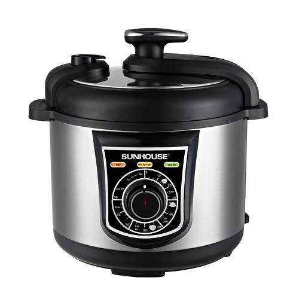
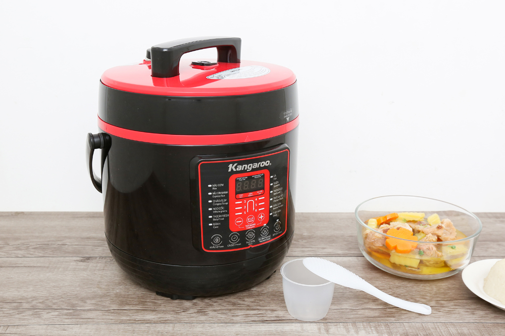
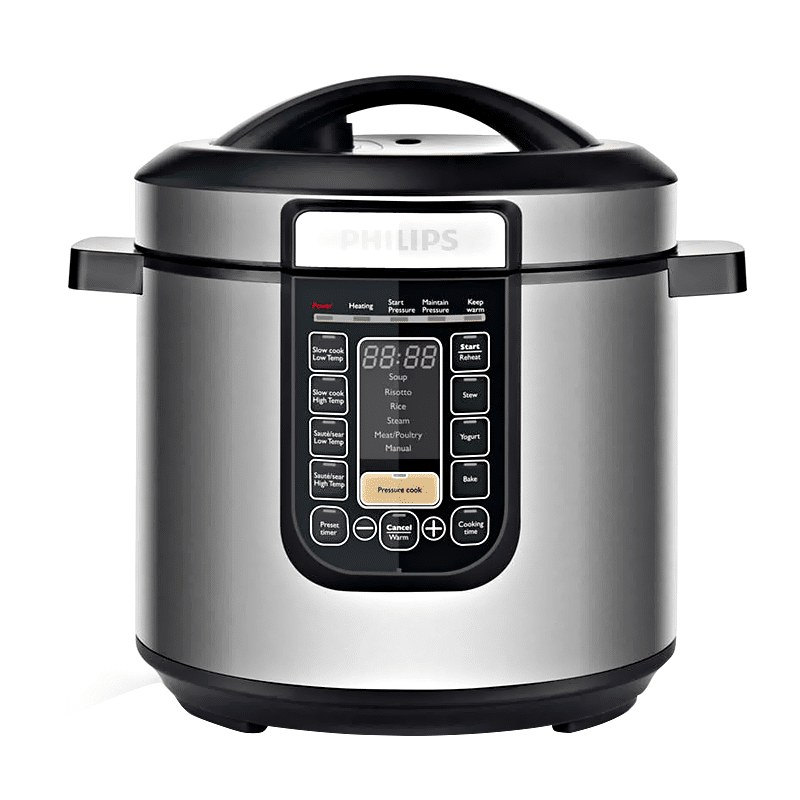

Đi mua nồi áp suất điện, đa số người ta hỏi hãng nào tốt trước, rồi mới hỏi dung tích sau. Thứ tự đó ngược. Dung tích mới quyết định nồi có nấu vừa bữa cơm nhà bạn hay không. Nồi quá nhỏ thì phải nấu hai mẻ, mất cái lợi nhanh gọn của nồi áp suất. Nồi quá to thì mỗi lần hầm ít thịt, nước loãng, vừa tốn điện vừa chiếm chỗ.
Bài này làm ngược lại thứ tự quen thuộc: chốt dung tích theo số người ăn trước, rồi mới so 3 mẫu đã xác minh được thông số và giá trong ngày 30/10/2026. Ba mẫu là Sunhouse SHD1552 5L, Kangaroo KG6P2 6L và Philips HD2137 6L. Giá trong bài là giá niêm yết tại FPT Shop trong ngày viết, trừ Philips HD2137 mà mình chưa tìm được giá bán lẻ mới.
Chọn dung tích theo số người ăn
Bảng dưới đây là khung chọn nhanh, tính theo một bữa hầm hoặc canh chính cho cả nhà. Nếu nhà bạn hay nấu dư để hôm sau ăn tiếp, cứ lấy lên một cỡ.
| Số người ăn thường xuyên | Dung tích nên chọn | Vì sao |
|---|---|---|
| 1-2 người | 3-4L | Đủ hầm một nồi nhỏ, nồi gọn, nhanh lên áp, không loãng nước vì nồi quá rộng. |
| 3-5 người | 5L | Cỡ phổ biến nhất cho gia đình Việt. Vừa một nồi canh hầm, vừa đủ nấu cháo hay kho thịt cho cả nhà. |
| 4-6 người, hay có khách | 6L | Hầm được miếng thịt lớn, nấu được nồi canh đầy cho bữa đông người, vẫn dùng được hằng ngày nếu nhà đông. |
| Trên 6 người | 6L trở lên, hoặc nấu 2 mẻ | Nồi điện gia dụng phổ biến dừng ở 6L. Nhà quá đông thì nên cân nhắc nồi áp suất bếp ga cỡ lớn thay vì cố tìm nồi điện khổng lồ. |
Một lưu ý cho nhà 1-2 người: bài này không gợi ý mẫu 4L cụ thể, vì mẫu 4L mình định đưa vào đã không xác minh được giá và thông số tại các shop đã kiểm tra trong ngày 30/10. Thà không gợi ý còn hơn gợi ý một mẫu chưa kiểm chứng được.
So sánh nhanh 3 mẫu đã xác minh
| Mẫu | Dung tích | Công suất | Bảng điều khiển | Giá tham khảo 30/10/2026 | Hợp với ai |
|---|---|---|---|---|---|
| Sunhouse SHD1552 | 5L | 900W | Núm xoay | 1.390.000đ (FPT Shop, giá gốc 1.559.000đ) | Nhà 3-5 người, thích vặn núm đơn giản |
| Kangaroo KG6P2 | 6L | 1000W | Điện tử, menu tiếng Việt | 790.000đ (FPT Shop, giá gốc 1.590.000đ) | Nhà 4-6 người, ưu tiên rẻ |
| Philips HD2137 | 6L | 1000W | Điện tử, nhiều chương trình | Chưa tìm được giá bán lẻ mới | Nhà 4-6 người, nấu nhiều loại món |
Dung tích và công suất của SHD1552 và KG6P2 lấy từ trang sản phẩm FPT Shop. Dung tích và công suất của HD2137 lấy từ sách hướng dẫn của Philips và trang Philips Việt Nam. Giá sale biến động nhanh, bạn nên so giá lại trước khi mua.
1. Sunhouse SHD1552 5L: cỡ vừa cho đa số gia đình

Giá tham khảo: 1.390.000đ (FPT Shop, ngày 30/10/2026; giá gốc hiển thị 1.559.000đ)
Đây là mẫu mình gợi ý đầu tiên cho nhà 3-5 người, vì 5L là cỡ ít phải đắn đo nhất. Nồi đủ lớn cho một bữa hầm của gia đình 4 người, nhưng không cồng kềnh như nồi 6L. Công suất 900W thấp hơn hai mẫu 6L trong bài một chút. Bảng điều khiển dạng núm xoay, nhìn ảnh sản phẩm là thấy ngay: vặn là chọn, không phải bấm qua nhiều menu điện tử. Với người lớn tuổi trong nhà hay người không thích đồ nhiều nút, kiểu điều khiển này là một điểm cộng thật.
- 5L vừa nhà 3-5 người, không thừa không thiếu
- Điều khiển núm xoay, dễ dùng cho mọi lứa tuổi
- Giá 1.390.000đ đã xác minh tại FPT Shop ngày 30/10
- 900W, thấp hơn hai mẫu 6L trong bài
- Nhà trên 5 người hoặc hay có khách sẽ thấy 5L hơi chật
- Ít chương trình nấu sẵn hơn nồi điện tử nhiều nút
Hợp với ai: gia đình 3-5 người, bếp không quá rộng, ưu tiên dễ dùng hơn nhiều tính năng.
Xem giá tốt nhất trên Shopee →2. Kangaroo KG6P2 6L: nồi lớn mà giá thấp nhất bài

Giá tham khảo: 790.000đ (FPT Shop, ngày 30/10/2026; giá gốc hiển thị 1.590.000đ) Lưu ý tồn kho: ngày 30/10 FPT Shop ghi mẫu này sắp cháy hàng, nên kiểm tra lại tồn kho trước khi đặt.
Điểm đáng chú ý nhất của KG6P2 không phải dung tích, mà là giá. Cùng 6L và 1000W như Philips HD2137, nhưng giá niêm yết ngày 30/10 chỉ 790.000đ, thấp hơn cả mẫu Sunhouse 5L trong bài. Đây là trường hợp mà "nồi to hơn" không đồng nghĩa "đắt hơn". Bảng điều khiển điện tử với menu tiếng Việt, nhìn trên ảnh sản phẩm thấy rõ các món như nấu cơm, hầm, cháo.
Một cảnh báo kèm theo mức giá này: giá gốc hiển thị 1.590.000đ và giá bán 790.000đ chênh nhau gần một nửa. Giá sale kiểu này thường không giữ lâu, nên nếu bạn chốt mẫu này thì nên mua sớm và giữ lại ảnh chụp giá lúc mua để đối chiếu khi nhận hàng.
- 6L, 1000W cho nhà 4-6 người
- Rẻ nhất bài: 790.000đ tại FPT Shop ngày 30/10
- Bảng điện tử, menu tiếng Việt dễ đọc
- Nhà ít người sẽ thấy 6L hơi to, tốn chỗ
- Mức giảm giá sâu, khó đoán giá giữ được bao lâu
- Thương hiệu ở phân khúc giá rẻ, cần kiểm tra kỹ bảo hành khi mua
Hợp với ai: nhà 4-6 người, ngân sách dưới 1 triệu, cần nồi lớn để hầm và nấu canh cho đông người.
Xem giá tốt nhất trên Shopee →3. Philips HD2137 6L: nồi đa năng cho người nấu nhiều món

Giá tham khảo: chưa tìm được giá bán lẻ mới (ngày 30/10/2026, trên Tiki và FPT Shop; Điện Máy Xanh không truy cập được trong lần kiểm tra)
HD2137 là mẫu duy nhất trong bài mà mình xác minh được thông số từ chính hãng nhưng không xác minh được giá. Dung tích 6.0L và công suất 1000W lấy từ sách hướng dẫn của Philips, đồng thời trang Philips Việt Nam cũng ghi cùng hai con số này cho mã HD2137/65. Điểm khác biệt nằm ở số chương trình nấu: theo sách hướng dẫn, máy có các chế độ như nấu chậm, nấu súp, nấu cơm, hấp, hầm thịt, làm sữa chua, nướng và xào.
Vì chưa có giá mới, mình không xếp HD2137 vào vị trí "đáng tiền nhất". Cách mua đúng với mẫu này là đối chiếu đúng mã HD2137 hoặc HD2137/65, hỏi giá ở 2-3 shop rồi mới so với KG6P2.
- 6L, 1000W, đủ cho nhà 4-6 người
- Nhiều chương trình: nấu chậm, súp, cơm, hấp, hầm, sữa chua, nướng, xào
- Thông số xác minh từ sách hướng dẫn và trang hãng
- Chưa tìm được giá bán lẻ mới ngày 30/10, khó so tiền trực tiếp
- Nhiều chương trình đồng nghĩa nhiều nút, người chỉ cần hầm đơn giản có thể thấy thừa
- 6L khá to với nhà ít người
Hợp với ai: nhà 4-6 người, nấu nhiều loại món và muốn một nồi thay được vài thiết bị khác.
Xem giá tốt nhất trên Shopee →Những mẫu chưa xác minh được ngày 30/10, và vì sao mình không đưa vào bảng
Ba mẫu mình định kiểm tra thêm là Philips HD2100/03 (nhóm 4L), Sunhouse SHD1755 (nhóm 5L) và Sharp KS-226 (nhóm 6L). Cả ba đều không tìm được trang sản phẩm đúng mã trên Tiki và FPT Shop trong lần kiểm tra ngày 30/10. Điện Máy Xanh thì không truy cập được trong lần kiểm tra này, trang chủ và trang tìm kiếm đều báo lỗi kết nối. Vì vậy bài này không ghi dung tích, công suất hay giá của ba mẫu đó. Nếu bạn thấy shop nào rao ba mã này, hãy đối chiếu đúng mã và hỏi rõ dung tích trên tem sản phẩm trước khi mua.
Trước khi bấm mua: 3 thứ kiểm tra bằng mắt
Không cần hiểu sâu về kỹ thuật, bạn chỉ cần kiểm tra 3 thứ này lúc nhận hàng. Thứ nhất, gioăng cao su ở nắp phải mềm, không nứt, lắp khít quanh nắp. Gioăng chai là nguyên nhân phổ biến khiến nồi xì hơi và lâu lên áp. Thứ hai, van xả áp phải xoay và nhấn được nhẹ nhàng, không kẹt. Thứ ba, lòng nồi không móp, không trầy sâu, đặt vừa khít vào thân nồi.
Kết luận: nên mua con nào?
- Nhà 3-5 người: Sunhouse SHD1552 5L, 1.390.000đ, núm xoay dễ dùng, cỡ vừa cho đa số gia đình.
- Nhà 4-6 người, ngân sách dưới 1 triệu: Kangaroo KG6P2 6L, 790.000đ, rẻ nhất bài mà vẫn đủ dung tích và công suất.
- Nhà 4-6 người, nấu nhiều món: Philips HD2137 6L, nhiều chương trình nhất, nhưng phải hỏi giá lại vì chưa có giá mới ngày 30/10.
Quy tắc nhanh: chốt số người ăn trước, chọn dung tích sau, rồi mới so hãng và giá trong cùng một dung tích, và nhớ chỉ đổ tối đa khoảng 2/3 nồi khi nấu áp suất.
Câu hỏi thường gặp
Nhà 2 người có nên mua nồi 6L không?
Không nên, trừ khi bạn hay nấu dư để ăn nhiều ngày. Nồi 6L nấu ít thức ăn thì nước loãng, lại tốn chỗ. Nhà 2 người nên chọn 3-4L.
Nồi 6L nấu được bao nhiêu người ăn?
Khoảng 4-6 người cho một bữa hầm hoặc canh chính, vì chỉ nên đổ tối đa khoảng 2/3 nồi. Với món đậu hay ngũ cốc nở ra, chỉ đổ khoảng 1/2 nồi.
Công suất 900W và 1000W khác nhau nhiều không?
Không nhiều. 1000W lên áp nhanh hơn một chút, nhưng thời gian hầm chủ yếu do món ăn quyết định. Dung tích đúng quan trọng hơn công suất.
Vì sao bài không ghi giá Philips HD2137?
Vì ngày 30/10 mình không tìm được trang sản phẩm đúng mã HD2137 trên Tiki và FPT Shop, còn Điện Máy Xanh thì không truy cập được. Ghi một con giá cũ không rõ nguồn sẽ sai hơn là nói thẳng chưa tìm được.